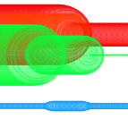

<!DOCTYPE html>
<html>

<head>
  <meta charset="UTF-8">
  <title>Circles</title>
  <link href='https://fonts.googleapis.com/css?family=Raleway:200' rel='stylesheet' type='text/css'>
  <link rel="stylesheet" href="style.css">

  <meta name="format-detection" content="telephone=no">
  <meta name="msapplication-tap-highlight" content="no">
  <meta name="viewport" content="width=device-width, initial-scale=1.0, maximum-scale=1.0, user-scalable=no" />
  <meta name="HandheldFriendly" content="True" />

  <script src="libraries/p5.js" type="text/javascript"></script>

  <script src="libraries/p5.dom.js" type="text/javascript"></script>
  <script src="libraries/p5.sound.js" type="text/javascript"></script>
  <script src="sketch.js" type="text/javascript"></script>

  <script src="setup.js" type="text/javascript"></script>
  <script src="circle.js" type="text/javascript"></script>
  <script src="lines.js" type="text/javascript"></script>

  <script src="fractal.js" type="text/javascript"></script>
  <script src="utilities.js" type="text/javascript"></script>
  <script src="brElt.js" type="text/javascript"></script>

  <script src="musicUtilities.js" type="text/javascript"></script>


  <style>
    body {
      padding: 0;
      margin: 0;
    }
    
    canvas {
      vertical-align: top;
    }
  </style>
</head>

<!--<body>
  <div id="homePageBack">
    <button id="fractalBtn" class="selectBtn" onClick="javascript:changeSelectPattern('fractals')"></button>
    <button id="circlesBtn" class="selectBtn" onClick="javascript:changeSelectPattern('circles')"></button>
    <button id="brownianBtn" class="selectBtn" onClick="javascript:changeSelectPattern('lines')"></button>
  </div>-->

</body>
<!--
  saveBtn = createButton('Save');
  saveBtn.mousePressed(saveFn);
  gridToggle = createButton('Refresh');
  gridToggle.mousePressed(refreshFn);
  -->

</html>